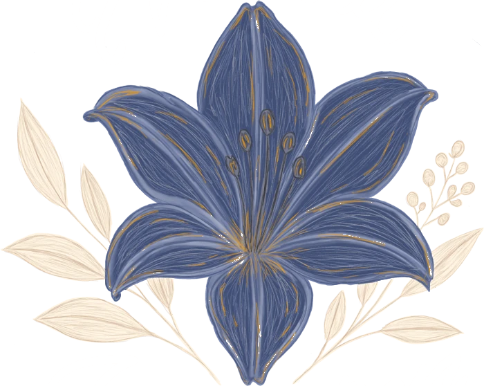

Rassembler et agir pour et par la culture, l’éducation, le sport et le numérique.
NEVARA est une association à but non lucratif. Elle porte FRACTURE ESPORT, sa structure esport, qui organise des tournois sur Counter-Strike 2.
Notre objet
L’association a pour objet de promouvoir, développer et organiser des activités à caractère culturel, éducatif, sportif et numérique.
L’article 4 des statuts détaille quatre champs d’action. Aujourd’hui, l’activité de NEVARA passe par FRACTURE ESPORT, qui relève du premier.
Esport
Événements, compétitions et manifestations de sport électronique et de jeu vidéo compétitif.
Création
Création, production et diffusion de contenus culturels, audiovisuels et numériques.
Transmission
Activités éducatives, formation et partage de compétences liées aux pratiques culturelles et numériques.
Vie associative
Une vie collective autour des centres d’intérêt que partagent nos membres.
Notre première structureFRACTURE ESPORT
Depuis avril 2025, FRACTURE organise des tournois en ligne sur Counter-Strike 2. On y joue en 3 contre 3, sur des maps imaginées et construites par Alyx, la créatrice de FRACTURE ESPORT.
Plusieurs de ces maps intègrent des œuvres d’artistes invité·es, visibles par les équipes et le public pendant les matchs.
Counter-Strike 2 · format 3v3 · maps originales · tournois en ligne
Soutenir FRACTURE ESPORT par un don, ou rejoindre l’association.